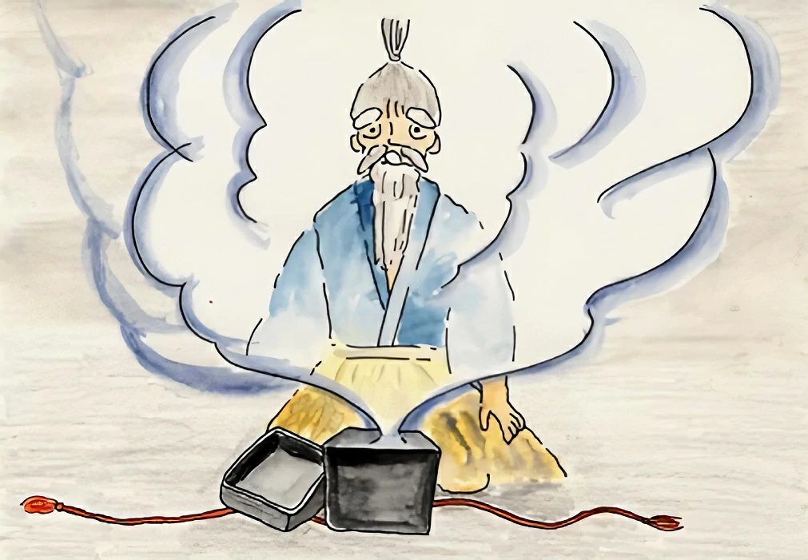

"Eu fiquei apenas sete dias no palácio do rei dragão mas aqui se passaram cem anos." Taro ficou triste e sem saber o que fazer e então se lembrou da caixa que havia recebido, mas se esqueceu que a princesa disse para que ele não abrisse a caixa e a abriu. De repente uma fumaça branca saiu da caixa, essa fumaça banhou Taro, seu cabelo se tornou branco e uma longa barba branca cresceu no seu rosto, suas costas se curvaram e ele se tornou velho.